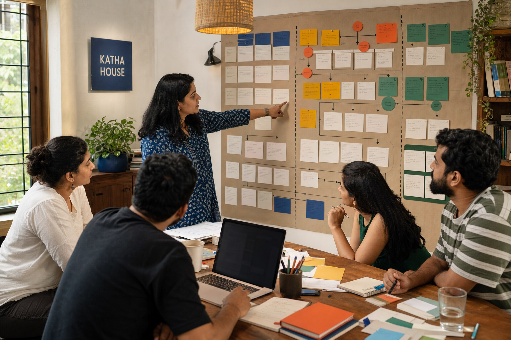
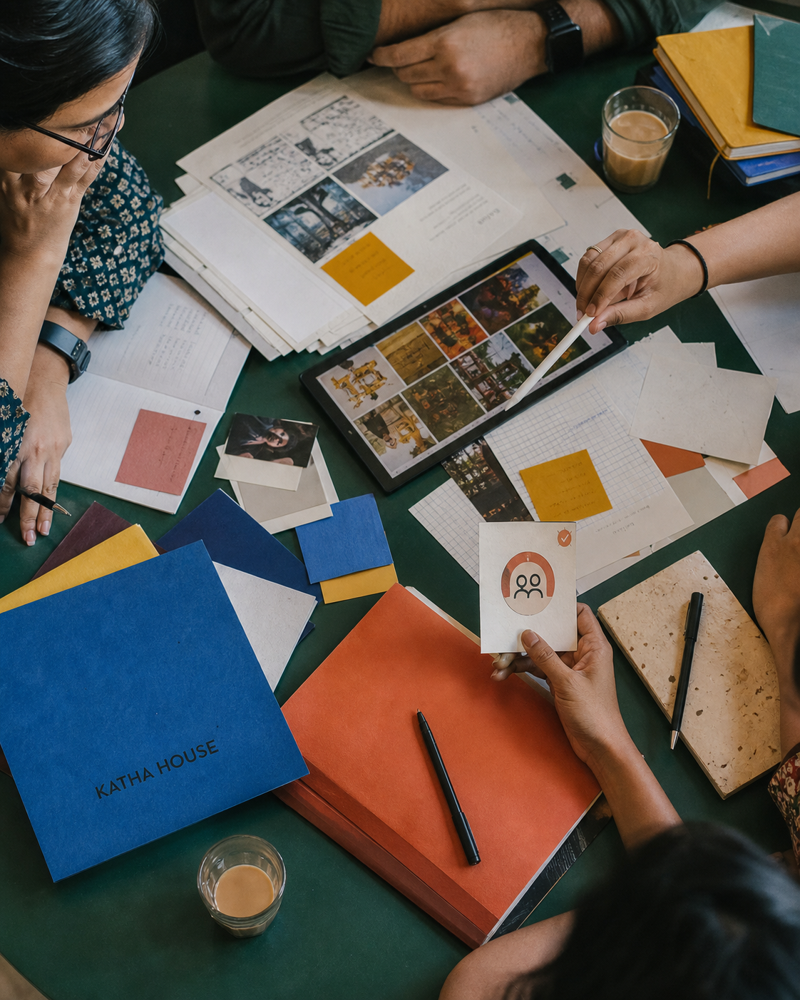
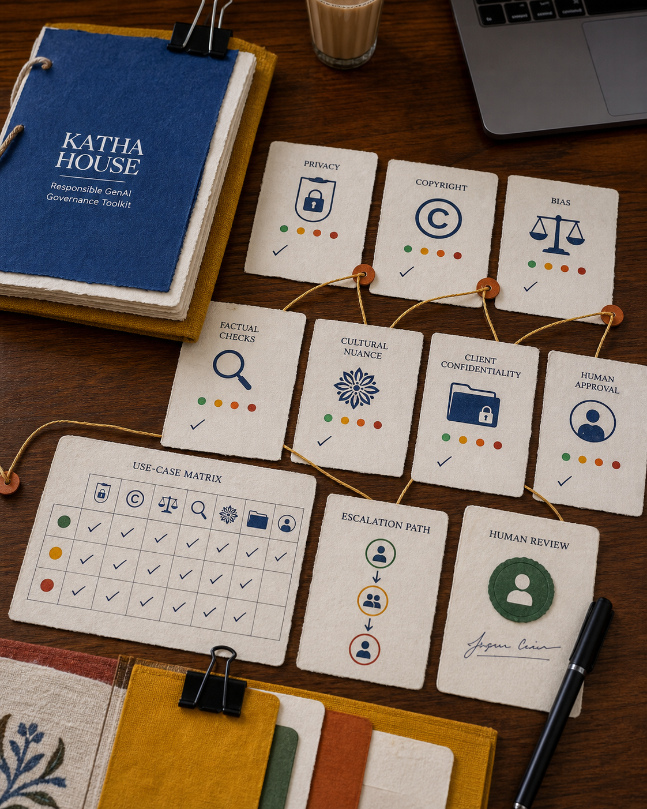

01 / CONTEXT
The team is experimenting. The system is not.
Katha House creates campaigns for Indian fashion, hospitality and culture brands. Some team members already use GenAI for moodboards, copy routes and storyboards; others are concerned about client confidentiality, copyright, cultural nuance, multilingual accuracy and the effect on creative roles. The goal is not maximum usage—it is appropriate, transparent and reviewable usage.
Project principles
- Start with internal, low-risk and high-learning use cases.
- Keep meaningful human review on every client-facing output.
- Protect confidential briefs, cultural context and original craft.
02 / PILOT
Learn before scaling.
Use-case matrix
Prioritize research synthesis, internal ideation, storyboard drafts and format adaptation by value and risk.
Agency guardrails
Approved tools, prohibited client inputs, disclosure rules, review gates and escalation path.
Role-based learning
Separate practice paths for strategy, copy, design and production using fictional briefs.
Pilot scorecard
Confidence, output quality, review effort, cycle time, rework and responsible-use signals.
03 / ROADMAP
Eight weeks to an informed decision.
Listen
Interviews, concerns, workflow mapping and baseline.
Prepare
Use cases, guardrails, training and pilot briefs.
Pilot
Controlled agency use cases with weekly reviews.
Decide
Evidence, team feedback and scale recommendation.
04 / RISKS
Responsible by design.
| RISK | CONTROL | OWNER |
|---|---|---|
| Sensitive data exposure | Input rules and approved environments | IT lead / project coordinator |
| Inaccurate output | Human verification before use | Discipline lead |
| Brand inconsistency | Brand references, cultural-context check and creative QA | Creative director |
| Low adoption | Role-based practice, champions and weekly feedback loop | Project coordinator |
05 / REFLECTION
What this demonstrates.
GenAI adoption is a change project, not a software announcement. A creative agency needs clarity about where AI adds value, what must remain human, how client information is protected and who is accountable before anything leaves the studio.
Skills: change planning, stakeholder interviews, use-case prioritization, risk ownership, responsible AI, training coordination and pilot measurement.
06 / PILOT TOOLKIT
Make responsible practice visible.
The pilot turns principles into everyday tools: a phased roadmap, role-based learning and clear human-review gates.


